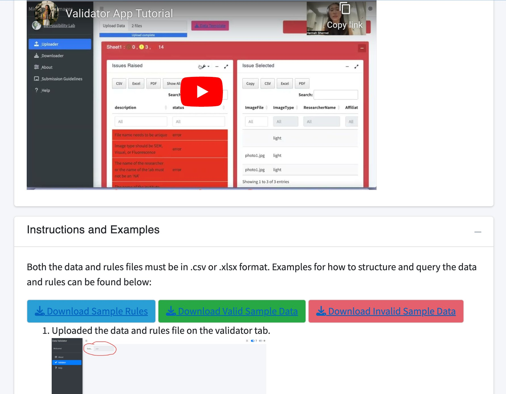
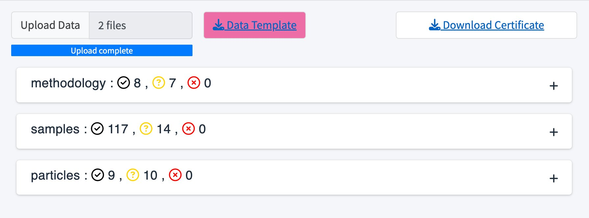
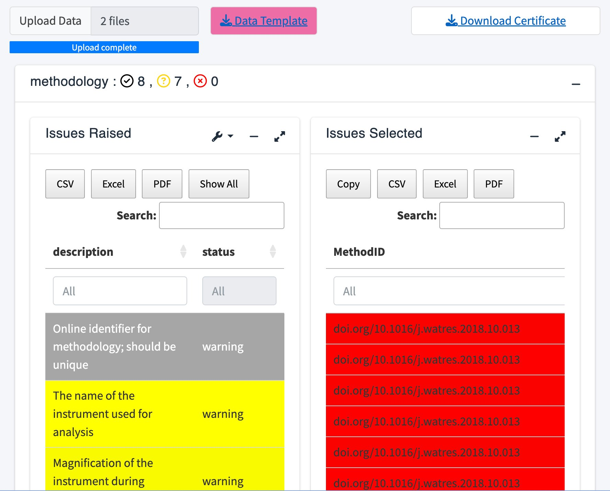
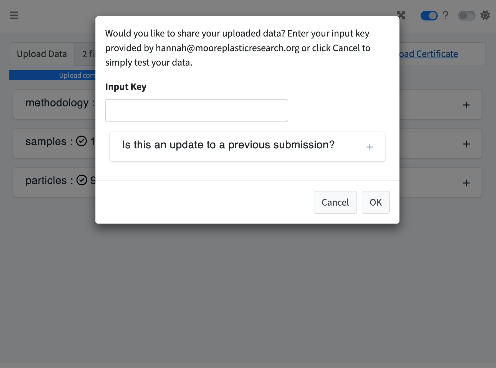
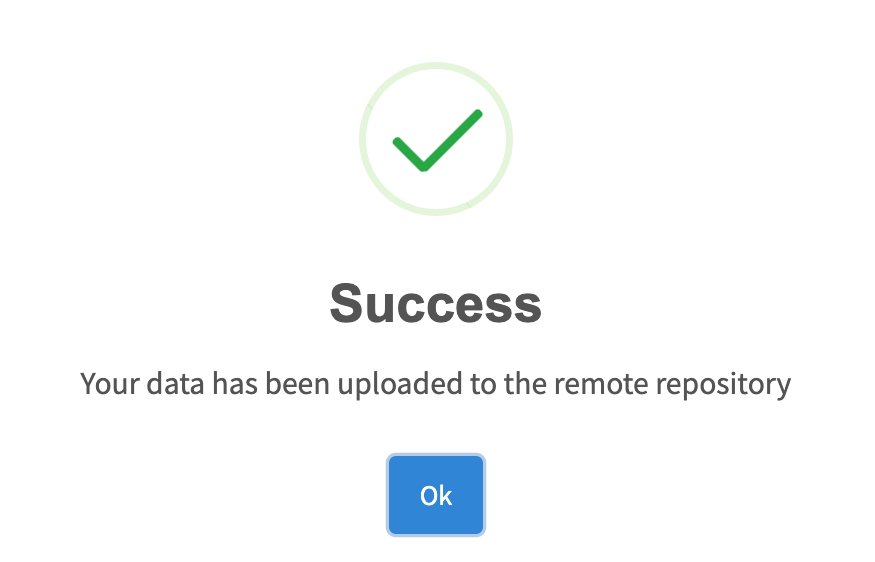

Document Overview
This document outlines a workflow to utilize the validator app from the One4All portal. After reading this document, users will have a better understanding of the processes involved in creating this app and how to navigate through it. The purpose of this tool is to not only validate, but to share and download data as well to the following cloud services: Amazon S3, CKAN, and/or MongoDB. For more documentation about the One4All R package, please see the One4All Package Tutorial.
Background: Rules
An existing set of rules created in ‘Excel’ is applied to the app and
package to validate the uploaded data. The current rules sheet consists
of six columns, including name, description, dataset, valid example,
severity, and the rule itself (see below for more details).
Additionally, users can structure their own rules sheet for their own
purposes. Download the sample rules under the '_Help' tab
in the validator app to view the current example rules.
Name: A placeholder for the rule.
'(ex. Amount)'
Description: A description of the rule and its
requirements.
'(ex. If there are two or more identical particles (in every aspect), upload it once and indicate the number of identical particles here as a whole number)'
Dataset: Optional field when the file is separated
into multiple sheets or files.
'(ex. partices; methodology; samples)'
Valid_example: A valid example of the rule.
'(ex. 2)'
Severity: The severity of the rule, labeled
‘warning’ or ‘error’; invalid data will be marked as either a ‘warning’
or an ‘error’ depending on the severity of the rule. Data identified as
a warning can be shared, whereas an error will need to be corrected and
the files reuploaded before sharing. '(ex. warning)'
Rule: The rule that validates the data (written in r
code). '(ex. Amount >= 2 | is.na(Amount))'
Running the App
To access the validator app, go to this link openanalysis.org/microplastic_data_portal/
or go to our GitHub
and link it directly to your own device in R. After setting up the
github to your device, go to the 'validator' folder, select
the global.R, ui.R, or server.R, and run the app.
If using the R package, read in the library and run the following
command, run_app().
run_app()How to structure your data
Download the valid data example under the '_Help' tab
within the app and adapt it for your own purposes. It is important that
the columns of the data are the same as the rules sheet because each
column in the data corresponds to a rule within the rules sheet.

Validating Data
Once the app is running, upload your data by selecting the ‘Upload Data’ icon and select from your ‘CSV’ or ‘Excel’ files along with a corresponding zip folder. Your data will then display as successes, warnings, or errors in the following tables.
To view the details, click on a table which will then display two
boxes, 'Issues Raised' and 'Issues Selected'.
The 'Issues Raised' box will highlight the warnings and
errors. Click on an 'Issues Raised' column and the invalid
entries will then appear to the right in the
'Issues Selected' box. To view all statuses, including
successes, switch the tool toggle labeled 'Errors only?' to
off.


Sharing Data
Reupload the files after correcting any errors; errors must be corrected to validate the data, but warnings are allowed.
If this is an update to a previous submission, upload the previous certificate from your local device. If this is a new submission, then follow the rest of the prompt on the screen.

An input key is optional and should only be provided if required. If it is required, request one from the maintainer listed in the configuration file.
Once your data is successfully uploaded, a new screen,
'Successful Remote Data Sharing', will be displayed.
Download the certificate in the top right corner to view the credentials
of this dataset.
